Example#
from trieste.acquisition.function import PredictiveVariance
import numpy as np
from lnl_surrogate.surrogate import train, load
from scipy.stats import norm
from lnl_surrogate.surrogate.setup_optimizer import McZGrid
from lnl_computer.mock_data import MockData, generate_mock_data
from typing import Dict
import matplotlib.pyplot as plt
import os
np.random.seed(0)
MINX, MAXX = 0.005, 0.015
MIDX = (MINX + MAXX) / 2
NORM = norm(MIDX, 0.003)
OUTDIR = 'outdir'
os.makedirs(OUTDIR, exist_ok=True)
def mock_lnl(*args, **kwargs):
sf_sample: Dict = kwargs.get('sf_sample')
sf_sample = np.array(list(sf_sample.values()))
return NORM.logpdf(sf_sample), 0
McZGrid.lnl = mock_lnl
mock_data = generate_mock_data(OUTDIR)
def plot_res(model, data, search_space):
x = np.linspace(MINX, MAXX, 100).reshape(-1, 1)
true_y = NORM.logpdf(x) * -1.0
model_y, model_yunc = model.predict(x)
x_obs = data.query_points
y_obs = data.observations
tf_to_np = lambda x: x.numpy().flatten() if hasattr(x, 'numpy') else x
# make new fig
plt.figure()
plt.plot(x, true_y, label='True', color='black')
plt.plot(x, model_y, label='Model', color="tab:orange")
plt.scatter(x_obs, y_obs, label='Observed', color='black')
yup, ydown = tf_to_np(model_y + model_yunc), tf_to_np(model_y - model_yunc)
plt.fill_between(x.flatten(), yup.flatten(), ydown.flatten(), alpha=0.2 , color="tab:orange")
plt.legend(loc='upper right')
return plt.gcf()
res = train(
model_type='gp',
mcz_obs=mock_data.observations.mcz,
compas_h5_filename=mock_data.compas_filename,
acquisition_fns=[PredictiveVariance()],
params=['aSF'],
n_init=2,
n_rounds=10,
n_pts_per_round=1,
outdir=f"{OUTDIR}/gp",
truth=dict(
aSF=MIDX,
lnl=mock_lnl(sf_sample={'aSF': MIDX})[0]*-1.0
),
model_plotter=plot_res,
noise_level=1e-3
)
2024-02-17 20:44:54.194047: I tensorflow/core/common_runtime/executor.cc:1197] [/device:CPU:0] (DEBUG INFO) Executor start aborting (this does not indicate an error and you can ignore this message): INVALID_ARGUMENT: You must feed a value for placeholder tensor 'gradients/diag_part_1_grad/set_diag/diag_part_1/k' with dtype int32
[[{{node gradients/diag_part_1_grad/set_diag/diag_part_1/k}}]]
2024-02-17 20:44:54.381061: I tensorflow/core/common_runtime/executor.cc:1197] [/device:CPU:0] (DEBUG INFO) Executor start aborting (this does not indicate an error and you can ignore this message): INVALID_ARGUMENT: You must feed a value for placeholder tensor 'gradients/set_diag_grad/Reshape/set_diag/k' with dtype int32
[[{{node gradients/set_diag_grad/Reshape/set_diag/k}}]]
2024-02-17 20:44:54.382479: I tensorflow/core/common_runtime/executor.cc:1197] [/device:CPU:0] (DEBUG INFO) Executor start aborting (this does not indicate an error and you can ignore this message): INVALID_ARGUMENT: You must feed a value for placeholder tensor 'gradients/set_diag_grad/Reshape/set_diag/k' with dtype int32
[[{{node gradients/set_diag_grad/Reshape/set_diag/k}}]]
2024-02-17 20:44:54.420964: I tensorflow/core/common_runtime/executor.cc:1197] [/device:CPU:0] (DEBUG INFO) Executor start aborting (this does not indicate an error and you can ignore this message): INVALID_ARGUMENT: You must feed a value for placeholder tensor 'gradients/diag_part_grad/set_diag/diag_part/k' with dtype int32
[[{{node gradients/diag_part_grad/set_diag/diag_part/k}}]]
2024-02-17 20:44:55.654615: I tensorflow/core/common_runtime/executor.cc:1197] [/device:CPU:0] (DEBUG INFO) Executor start aborting (this does not indicate an error and you can ignore this message): INVALID_ARGUMENT: You must feed a value for placeholder tensor 'gradients/logdet/diag_part_grad/diag/logdet/diag_part/k' with dtype int32
[[{{node gradients/logdet/diag_part_grad/diag/logdet/diag_part/k}}]]
2024-02-17 20:44:55.685973: I tensorflow/core/common_runtime/executor.cc:1197] [/device:CPU:0] (DEBUG INFO) Executor start aborting (this does not indicate an error and you can ignore this message): INVALID_ARGUMENT: You must feed a value for placeholder tensor 'gradients/set_diag_grad/set_diag/set_diag/k' with dtype int32
[[{{node gradients/set_diag_grad/set_diag/set_diag/k}}]]
2024-02-17 20:44:55.687498: I tensorflow/core/common_runtime/executor.cc:1197] [/device:CPU:0] (DEBUG INFO) Executor start aborting (this does not indicate an error and you can ignore this message): INVALID_ARGUMENT: You must feed a value for placeholder tensor 'gradients/set_diag_grad/set_diag/set_diag/k' with dtype int32
[[{{node gradients/set_diag_grad/set_diag/set_diag/k}}]]
2024-02-17 20:44:55.706928: I tensorflow/core/common_runtime/executor.cc:1197] [/device:CPU:0] (DEBUG INFO) Executor start aborting (this does not indicate an error and you can ignore this message): INVALID_ARGUMENT: You must feed a value for placeholder tensor 'gradients/diag_part_grad/diag/diag_part/k' with dtype int32
[[{{node gradients/diag_part_grad/diag/diag_part/k}}]]
2024-02-17 20:44:57.499792: I tensorflow/core/common_runtime/executor.cc:1197] [/device:CPU:0] (DEBUG INFO) Executor start aborting (this does not indicate an error and you can ignore this message): INVALID_ARGUMENT: You must feed a value for placeholder tensor 'gradients/diag_part_1_grad/set_diag/diag_part_1/k' with dtype int32
[[{{node gradients/diag_part_1_grad/set_diag/diag_part_1/k}}]]
2024-02-17 20:44:57.673068: I tensorflow/core/common_runtime/executor.cc:1197] [/device:CPU:0] (DEBUG INFO) Executor start aborting (this does not indicate an error and you can ignore this message): INVALID_ARGUMENT: You must feed a value for placeholder tensor 'gradients/set_diag_grad/Reshape/set_diag/k' with dtype int32
[[{{node gradients/set_diag_grad/Reshape/set_diag/k}}]]
2024-02-17 20:44:57.674736: I tensorflow/core/common_runtime/executor.cc:1197] [/device:CPU:0] (DEBUG INFO) Executor start aborting (this does not indicate an error and you can ignore this message): INVALID_ARGUMENT: You must feed a value for placeholder tensor 'gradients/set_diag_grad/Reshape/set_diag/k' with dtype int32
[[{{node gradients/set_diag_grad/Reshape/set_diag/k}}]]
2024-02-17 20:44:57.710501: I tensorflow/core/common_runtime/executor.cc:1197] [/device:CPU:0] (DEBUG INFO) Executor start aborting (this does not indicate an error and you can ignore this message): INVALID_ARGUMENT: You must feed a value for placeholder tensor 'gradients/diag_part_grad/set_diag/diag_part/k' with dtype int32
[[{{node gradients/diag_part_grad/set_diag/diag_part/k}}]]
Optimization completed without errors
2024-02-17 20:45:00.803755: I tensorflow/core/common_runtime/executor.cc:1197] [/device:CPU:0] (DEBUG INFO) Executor start aborting (this does not indicate an error and you can ignore this message): INVALID_ARGUMENT: You must feed a value for placeholder tensor 'gradients/diag_part_1_grad/set_diag/diag_part_1/k' with dtype int32
[[{{node gradients/diag_part_1_grad/set_diag/diag_part_1/k}}]]
2024-02-17 20:45:00.976409: I tensorflow/core/common_runtime/executor.cc:1197] [/device:CPU:0] (DEBUG INFO) Executor start aborting (this does not indicate an error and you can ignore this message): INVALID_ARGUMENT: You must feed a value for placeholder tensor 'gradients/set_diag_grad/Reshape/set_diag/k' with dtype int32
[[{{node gradients/set_diag_grad/Reshape/set_diag/k}}]]
2024-02-17 20:45:00.977649: I tensorflow/core/common_runtime/executor.cc:1197] [/device:CPU:0] (DEBUG INFO) Executor start aborting (this does not indicate an error and you can ignore this message): INVALID_ARGUMENT: You must feed a value for placeholder tensor 'gradients/set_diag_grad/Reshape/set_diag/k' with dtype int32
[[{{node gradients/set_diag_grad/Reshape/set_diag/k}}]]
2024-02-17 20:45:01.013458: I tensorflow/core/common_runtime/executor.cc:1197] [/device:CPU:0] (DEBUG INFO) Executor start aborting (this does not indicate an error and you can ignore this message): INVALID_ARGUMENT: You must feed a value for placeholder tensor 'gradients/diag_part_grad/set_diag/diag_part/k' with dtype int32
[[{{node gradients/diag_part_grad/set_diag/diag_part/k}}]]
2024-02-17 20:45:02.459759: I tensorflow/core/common_runtime/executor.cc:1197] [/device:CPU:0] (DEBUG INFO) Executor start aborting (this does not indicate an error and you can ignore this message): INVALID_ARGUMENT: You must feed a value for placeholder tensor 'gradients/diag_part_1_grad/set_diag/diag_part_1/k' with dtype int32
[[{{node gradients/diag_part_1_grad/set_diag/diag_part_1/k}}]]
2024-02-17 20:45:02.633181: I tensorflow/core/common_runtime/executor.cc:1197] [/device:CPU:0] (DEBUG INFO) Executor start aborting (this does not indicate an error and you can ignore this message): INVALID_ARGUMENT: You must feed a value for placeholder tensor 'gradients/set_diag_grad/Reshape/set_diag/k' with dtype int32
[[{{node gradients/set_diag_grad/Reshape/set_diag/k}}]]
2024-02-17 20:45:02.634402: I tensorflow/core/common_runtime/executor.cc:1197] [/device:CPU:0] (DEBUG INFO) Executor start aborting (this does not indicate an error and you can ignore this message): INVALID_ARGUMENT: You must feed a value for placeholder tensor 'gradients/set_diag_grad/Reshape/set_diag/k' with dtype int32
[[{{node gradients/set_diag_grad/Reshape/set_diag/k}}]]
2024-02-17 20:45:02.670141: I tensorflow/core/common_runtime/executor.cc:1197] [/device:CPU:0] (DEBUG INFO) Executor start aborting (this does not indicate an error and you can ignore this message): INVALID_ARGUMENT: You must feed a value for placeholder tensor 'gradients/diag_part_grad/set_diag/diag_part/k' with dtype int32
[[{{node gradients/diag_part_grad/set_diag/diag_part/k}}]]
Optimization completed without errors
2024-02-17 20:45:05.738000: I tensorflow/core/common_runtime/executor.cc:1197] [/device:CPU:0] (DEBUG INFO) Executor start aborting (this does not indicate an error and you can ignore this message): INVALID_ARGUMENT: You must feed a value for placeholder tensor 'gradients/diag_part_1_grad/set_diag/diag_part_1/k' with dtype int32
[[{{node gradients/diag_part_1_grad/set_diag/diag_part_1/k}}]]
2024-02-17 20:45:05.910925: I tensorflow/core/common_runtime/executor.cc:1197] [/device:CPU:0] (DEBUG INFO) Executor start aborting (this does not indicate an error and you can ignore this message): INVALID_ARGUMENT: You must feed a value for placeholder tensor 'gradients/set_diag_grad/Reshape/set_diag/k' with dtype int32
[[{{node gradients/set_diag_grad/Reshape/set_diag/k}}]]
2024-02-17 20:45:05.912075: I tensorflow/core/common_runtime/executor.cc:1197] [/device:CPU:0] (DEBUG INFO) Executor start aborting (this does not indicate an error and you can ignore this message): INVALID_ARGUMENT: You must feed a value for placeholder tensor 'gradients/set_diag_grad/Reshape/set_diag/k' with dtype int32
[[{{node gradients/set_diag_grad/Reshape/set_diag/k}}]]
2024-02-17 20:45:07.367829: I tensorflow/core/common_runtime/executor.cc:1197] [/device:CPU:0] (DEBUG INFO) Executor start aborting (this does not indicate an error and you can ignore this message): INVALID_ARGUMENT: You must feed a value for placeholder tensor 'gradients/diag_part_grad/set_diag/diag_part/k' with dtype int32
[[{{node gradients/diag_part_grad/set_diag/diag_part/k}}]]
2024-02-17 20:45:08.800607: I tensorflow/core/common_runtime/executor.cc:1197] [/device:CPU:0] (DEBUG INFO) Executor start aborting (this does not indicate an error and you can ignore this message): INVALID_ARGUMENT: You must feed a value for placeholder tensor 'gradients/diag_part_1_grad/set_diag/diag_part_1/k' with dtype int32
[[{{node gradients/diag_part_1_grad/set_diag/diag_part_1/k}}]]
2024-02-17 20:45:08.970723: I tensorflow/core/common_runtime/executor.cc:1197] [/device:CPU:0] (DEBUG INFO) Executor start aborting (this does not indicate an error and you can ignore this message): INVALID_ARGUMENT: You must feed a value for placeholder tensor 'gradients/set_diag_grad/Reshape/set_diag/k' with dtype int32
[[{{node gradients/set_diag_grad/Reshape/set_diag/k}}]]
2024-02-17 20:45:08.971953: I tensorflow/core/common_runtime/executor.cc:1197] [/device:CPU:0] (DEBUG INFO) Executor start aborting (this does not indicate an error and you can ignore this message): INVALID_ARGUMENT: You must feed a value for placeholder tensor 'gradients/set_diag_grad/Reshape/set_diag/k' with dtype int32
[[{{node gradients/set_diag_grad/Reshape/set_diag/k}}]]
2024-02-17 20:45:09.006267: I tensorflow/core/common_runtime/executor.cc:1197] [/device:CPU:0] (DEBUG INFO) Executor start aborting (this does not indicate an error and you can ignore this message): INVALID_ARGUMENT: You must feed a value for placeholder tensor 'gradients/diag_part_grad/set_diag/diag_part/k' with dtype int32
[[{{node gradients/diag_part_grad/set_diag/diag_part/k}}]]
Optimization completed without errors
2024-02-17 20:45:12.040021: I tensorflow/core/common_runtime/executor.cc:1197] [/device:CPU:0] (DEBUG INFO) Executor start aborting (this does not indicate an error and you can ignore this message): INVALID_ARGUMENT: You must feed a value for placeholder tensor 'gradients/diag_part_1_grad/set_diag/diag_part_1/k' with dtype int32
[[{{node gradients/diag_part_1_grad/set_diag/diag_part_1/k}}]]
2024-02-17 20:45:12.218186: I tensorflow/core/common_runtime/executor.cc:1197] [/device:CPU:0] (DEBUG INFO) Executor start aborting (this does not indicate an error and you can ignore this message): INVALID_ARGUMENT: You must feed a value for placeholder tensor 'gradients/set_diag_grad/Reshape/set_diag/k' with dtype int32
[[{{node gradients/set_diag_grad/Reshape/set_diag/k}}]]
2024-02-17 20:45:12.219413: I tensorflow/core/common_runtime/executor.cc:1197] [/device:CPU:0] (DEBUG INFO) Executor start aborting (this does not indicate an error and you can ignore this message): INVALID_ARGUMENT: You must feed a value for placeholder tensor 'gradients/set_diag_grad/Reshape/set_diag/k' with dtype int32
[[{{node gradients/set_diag_grad/Reshape/set_diag/k}}]]
2024-02-17 20:45:12.255403: I tensorflow/core/common_runtime/executor.cc:1197] [/device:CPU:0] (DEBUG INFO) Executor start aborting (this does not indicate an error and you can ignore this message): INVALID_ARGUMENT: You must feed a value for placeholder tensor 'gradients/diag_part_grad/set_diag/diag_part/k' with dtype int32
[[{{node gradients/diag_part_grad/set_diag/diag_part/k}}]]
2024-02-17 20:45:13.707993: I tensorflow/core/common_runtime/executor.cc:1197] [/device:CPU:0] (DEBUG INFO) Executor start aborting (this does not indicate an error and you can ignore this message): INVALID_ARGUMENT: You must feed a value for placeholder tensor 'gradients/diag_part_1_grad/set_diag/diag_part_1/k' with dtype int32
[[{{node gradients/diag_part_1_grad/set_diag/diag_part_1/k}}]]
2024-02-17 20:45:13.877611: I tensorflow/core/common_runtime/executor.cc:1197] [/device:CPU:0] (DEBUG INFO) Executor start aborting (this does not indicate an error and you can ignore this message): INVALID_ARGUMENT: You must feed a value for placeholder tensor 'gradients/set_diag_grad/Reshape/set_diag/k' with dtype int32
[[{{node gradients/set_diag_grad/Reshape/set_diag/k}}]]
2024-02-17 20:45:13.878757: I tensorflow/core/common_runtime/executor.cc:1197] [/device:CPU:0] (DEBUG INFO) Executor start aborting (this does not indicate an error and you can ignore this message): INVALID_ARGUMENT: You must feed a value for placeholder tensor 'gradients/set_diag_grad/Reshape/set_diag/k' with dtype int32
[[{{node gradients/set_diag_grad/Reshape/set_diag/k}}]]
2024-02-17 20:45:13.913507: I tensorflow/core/common_runtime/executor.cc:1197] [/device:CPU:0] (DEBUG INFO) Executor start aborting (this does not indicate an error and you can ignore this message): INVALID_ARGUMENT: You must feed a value for placeholder tensor 'gradients/diag_part_grad/set_diag/diag_part/k' with dtype int32
[[{{node gradients/diag_part_grad/set_diag/diag_part/k}}]]
Optimization completed without errors
2024-02-17 20:45:16.918796: I tensorflow/core/common_runtime/executor.cc:1197] [/device:CPU:0] (DEBUG INFO) Executor start aborting (this does not indicate an error and you can ignore this message): INVALID_ARGUMENT: You must feed a value for placeholder tensor 'gradients/diag_part_1_grad/set_diag/diag_part_1/k' with dtype int32
[[{{node gradients/diag_part_1_grad/set_diag/diag_part_1/k}}]]
2024-02-17 20:45:17.089145: I tensorflow/core/common_runtime/executor.cc:1197] [/device:CPU:0] (DEBUG INFO) Executor start aborting (this does not indicate an error and you can ignore this message): INVALID_ARGUMENT: You must feed a value for placeholder tensor 'gradients/set_diag_grad/Reshape/set_diag/k' with dtype int32
[[{{node gradients/set_diag_grad/Reshape/set_diag/k}}]]
2024-02-17 20:45:17.090379: I tensorflow/core/common_runtime/executor.cc:1197] [/device:CPU:0] (DEBUG INFO) Executor start aborting (this does not indicate an error and you can ignore this message): INVALID_ARGUMENT: You must feed a value for placeholder tensor 'gradients/set_diag_grad/Reshape/set_diag/k' with dtype int32
[[{{node gradients/set_diag_grad/Reshape/set_diag/k}}]]
2024-02-17 20:45:17.125049: I tensorflow/core/common_runtime/executor.cc:1197] [/device:CPU:0] (DEBUG INFO) Executor start aborting (this does not indicate an error and you can ignore this message): INVALID_ARGUMENT: You must feed a value for placeholder tensor 'gradients/diag_part_grad/set_diag/diag_part/k' with dtype int32
[[{{node gradients/diag_part_grad/set_diag/diag_part/k}}]]
2024-02-17 20:45:18.583048: I tensorflow/core/common_runtime/executor.cc:1197] [/device:CPU:0] (DEBUG INFO) Executor start aborting (this does not indicate an error and you can ignore this message): INVALID_ARGUMENT: You must feed a value for placeholder tensor 'gradients/diag_part_1_grad/set_diag/diag_part_1/k' with dtype int32
[[{{node gradients/diag_part_1_grad/set_diag/diag_part_1/k}}]]
2024-02-17 20:45:18.751932: I tensorflow/core/common_runtime/executor.cc:1197] [/device:CPU:0] (DEBUG INFO) Executor start aborting (this does not indicate an error and you can ignore this message): INVALID_ARGUMENT: You must feed a value for placeholder tensor 'gradients/set_diag_grad/Reshape/set_diag/k' with dtype int32
[[{{node gradients/set_diag_grad/Reshape/set_diag/k}}]]
2024-02-17 20:45:18.753307: I tensorflow/core/common_runtime/executor.cc:1197] [/device:CPU:0] (DEBUG INFO) Executor start aborting (this does not indicate an error and you can ignore this message): INVALID_ARGUMENT: You must feed a value for placeholder tensor 'gradients/set_diag_grad/Reshape/set_diag/k' with dtype int32
[[{{node gradients/set_diag_grad/Reshape/set_diag/k}}]]
2024-02-17 20:45:18.787329: I tensorflow/core/common_runtime/executor.cc:1197] [/device:CPU:0] (DEBUG INFO) Executor start aborting (this does not indicate an error and you can ignore this message): INVALID_ARGUMENT: You must feed a value for placeholder tensor 'gradients/diag_part_grad/set_diag/diag_part/k' with dtype int32
[[{{node gradients/diag_part_grad/set_diag/diag_part/k}}]]
Optimization completed without errors
2024-02-17 20:45:21.842430: I tensorflow/core/common_runtime/executor.cc:1197] [/device:CPU:0] (DEBUG INFO) Executor start aborting (this does not indicate an error and you can ignore this message): INVALID_ARGUMENT: You must feed a value for placeholder tensor 'gradients/diag_part_1_grad/set_diag/diag_part_1/k' with dtype int32
[[{{node gradients/diag_part_1_grad/set_diag/diag_part_1/k}}]]
2024-02-17 20:45:22.015295: I tensorflow/core/common_runtime/executor.cc:1197] [/device:CPU:0] (DEBUG INFO) Executor start aborting (this does not indicate an error and you can ignore this message): INVALID_ARGUMENT: You must feed a value for placeholder tensor 'gradients/set_diag_grad/Reshape/set_diag/k' with dtype int32
[[{{node gradients/set_diag_grad/Reshape/set_diag/k}}]]
2024-02-17 20:45:22.016553: I tensorflow/core/common_runtime/executor.cc:1197] [/device:CPU:0] (DEBUG INFO) Executor start aborting (this does not indicate an error and you can ignore this message): INVALID_ARGUMENT: You must feed a value for placeholder tensor 'gradients/set_diag_grad/Reshape/set_diag/k' with dtype int32
[[{{node gradients/set_diag_grad/Reshape/set_diag/k}}]]
2024-02-17 20:45:22.051377: I tensorflow/core/common_runtime/executor.cc:1197] [/device:CPU:0] (DEBUG INFO) Executor start aborting (this does not indicate an error and you can ignore this message): INVALID_ARGUMENT: You must feed a value for placeholder tensor 'gradients/diag_part_grad/set_diag/diag_part/k' with dtype int32
[[{{node gradients/diag_part_grad/set_diag/diag_part/k}}]]
2024-02-17 20:45:23.535287: I tensorflow/core/common_runtime/executor.cc:1197] [/device:CPU:0] (DEBUG INFO) Executor start aborting (this does not indicate an error and you can ignore this message): INVALID_ARGUMENT: You must feed a value for placeholder tensor 'gradients/diag_part_1_grad/set_diag/diag_part_1/k' with dtype int32
[[{{node gradients/diag_part_1_grad/set_diag/diag_part_1/k}}]]
2024-02-17 20:45:23.707364: I tensorflow/core/common_runtime/executor.cc:1197] [/device:CPU:0] (DEBUG INFO) Executor start aborting (this does not indicate an error and you can ignore this message): INVALID_ARGUMENT: You must feed a value for placeholder tensor 'gradients/set_diag_grad/Reshape/set_diag/k' with dtype int32
[[{{node gradients/set_diag_grad/Reshape/set_diag/k}}]]
2024-02-17 20:45:23.709685: I tensorflow/core/common_runtime/executor.cc:1197] [/device:CPU:0] (DEBUG INFO) Executor start aborting (this does not indicate an error and you can ignore this message): INVALID_ARGUMENT: You must feed a value for placeholder tensor 'gradients/set_diag_grad/Reshape/set_diag/k' with dtype int32
[[{{node gradients/set_diag_grad/Reshape/set_diag/k}}]]
2024-02-17 20:45:23.744043: I tensorflow/core/common_runtime/executor.cc:1197] [/device:CPU:0] (DEBUG INFO) Executor start aborting (this does not indicate an error and you can ignore this message): INVALID_ARGUMENT: You must feed a value for placeholder tensor 'gradients/diag_part_grad/set_diag/diag_part/k' with dtype int32
[[{{node gradients/diag_part_grad/set_diag/diag_part/k}}]]
Optimization completed without errors
/Users/avaj0001/Documents/projects/compas_dev/COSMIC_INT/lnl_surrogate/src/lnl_surrogate/plotting/plot_bo_metrics.py:31: RuntimeWarning: More than 20 figures have been opened. Figures created through the pyplot interface (`matplotlib.pyplot.figure`) are retained until explicitly closed and may consume too much memory. (To control this warning, see the rcParam `figure.max_open_warning`). Consider using `matplotlib.pyplot.close()`.
fig, axes = plt.subplots(2, 1, figsize=(6, 10), sharex=True)
2024-02-17 20:45:26.850879: I tensorflow/core/common_runtime/executor.cc:1197] [/device:CPU:0] (DEBUG INFO) Executor start aborting (this does not indicate an error and you can ignore this message): INVALID_ARGUMENT: You must feed a value for placeholder tensor 'gradients/diag_part_1_grad/set_diag/diag_part_1/k' with dtype int32
[[{{node gradients/diag_part_1_grad/set_diag/diag_part_1/k}}]]
2024-02-17 20:45:27.019723: I tensorflow/core/common_runtime/executor.cc:1197] [/device:CPU:0] (DEBUG INFO) Executor start aborting (this does not indicate an error and you can ignore this message): INVALID_ARGUMENT: You must feed a value for placeholder tensor 'gradients/set_diag_grad/Reshape/set_diag/k' with dtype int32
[[{{node gradients/set_diag_grad/Reshape/set_diag/k}}]]
2024-02-17 20:45:27.021050: I tensorflow/core/common_runtime/executor.cc:1197] [/device:CPU:0] (DEBUG INFO) Executor start aborting (this does not indicate an error and you can ignore this message): INVALID_ARGUMENT: You must feed a value for placeholder tensor 'gradients/set_diag_grad/Reshape/set_diag/k' with dtype int32
[[{{node gradients/set_diag_grad/Reshape/set_diag/k}}]]
2024-02-17 20:45:27.055418: I tensorflow/core/common_runtime/executor.cc:1197] [/device:CPU:0] (DEBUG INFO) Executor start aborting (this does not indicate an error and you can ignore this message): INVALID_ARGUMENT: You must feed a value for placeholder tensor 'gradients/diag_part_grad/set_diag/diag_part/k' with dtype int32
[[{{node gradients/diag_part_grad/set_diag/diag_part/k}}]]
2024-02-17 20:45:28.523071: I tensorflow/core/common_runtime/executor.cc:1197] [/device:CPU:0] (DEBUG INFO) Executor start aborting (this does not indicate an error and you can ignore this message): INVALID_ARGUMENT: You must feed a value for placeholder tensor 'gradients/diag_part_1_grad/set_diag/diag_part_1/k' with dtype int32
[[{{node gradients/diag_part_1_grad/set_diag/diag_part_1/k}}]]
2024-02-17 20:45:28.695926: I tensorflow/core/common_runtime/executor.cc:1197] [/device:CPU:0] (DEBUG INFO) Executor start aborting (this does not indicate an error and you can ignore this message): INVALID_ARGUMENT: You must feed a value for placeholder tensor 'gradients/set_diag_grad/Reshape/set_diag/k' with dtype int32
[[{{node gradients/set_diag_grad/Reshape/set_diag/k}}]]
2024-02-17 20:45:28.697056: I tensorflow/core/common_runtime/executor.cc:1197] [/device:CPU:0] (DEBUG INFO) Executor start aborting (this does not indicate an error and you can ignore this message): INVALID_ARGUMENT: You must feed a value for placeholder tensor 'gradients/set_diag_grad/Reshape/set_diag/k' with dtype int32
[[{{node gradients/set_diag_grad/Reshape/set_diag/k}}]]
2024-02-17 20:45:28.731725: I tensorflow/core/common_runtime/executor.cc:1197] [/device:CPU:0] (DEBUG INFO) Executor start aborting (this does not indicate an error and you can ignore this message): INVALID_ARGUMENT: You must feed a value for placeholder tensor 'gradients/diag_part_grad/set_diag/diag_part/k' with dtype int32
[[{{node gradients/diag_part_grad/set_diag/diag_part/k}}]]
Optimization completed without errors
2024-02-17 20:45:31.877587: I tensorflow/core/common_runtime/executor.cc:1197] [/device:CPU:0] (DEBUG INFO) Executor start aborting (this does not indicate an error and you can ignore this message): INVALID_ARGUMENT: You must feed a value for placeholder tensor 'gradients/diag_part_1_grad/set_diag/diag_part_1/k' with dtype int32
[[{{node gradients/diag_part_1_grad/set_diag/diag_part_1/k}}]]
2024-02-17 20:45:32.046379: I tensorflow/core/common_runtime/executor.cc:1197] [/device:CPU:0] (DEBUG INFO) Executor start aborting (this does not indicate an error and you can ignore this message): INVALID_ARGUMENT: You must feed a value for placeholder tensor 'gradients/set_diag_grad/Reshape/set_diag/k' with dtype int32
[[{{node gradients/set_diag_grad/Reshape/set_diag/k}}]]
2024-02-17 20:45:32.047602: I tensorflow/core/common_runtime/executor.cc:1197] [/device:CPU:0] (DEBUG INFO) Executor start aborting (this does not indicate an error and you can ignore this message): INVALID_ARGUMENT: You must feed a value for placeholder tensor 'gradients/set_diag_grad/Reshape/set_diag/k' with dtype int32
[[{{node gradients/set_diag_grad/Reshape/set_diag/k}}]]
2024-02-17 20:45:32.081554: I tensorflow/core/common_runtime/executor.cc:1197] [/device:CPU:0] (DEBUG INFO) Executor start aborting (this does not indicate an error and you can ignore this message): INVALID_ARGUMENT: You must feed a value for placeholder tensor 'gradients/diag_part_grad/set_diag/diag_part/k' with dtype int32
[[{{node gradients/diag_part_grad/set_diag/diag_part/k}}]]
2024-02-17 20:45:33.546076: I tensorflow/core/common_runtime/executor.cc:1197] [/device:CPU:0] (DEBUG INFO) Executor start aborting (this does not indicate an error and you can ignore this message): INVALID_ARGUMENT: You must feed a value for placeholder tensor 'gradients/diag_part_1_grad/set_diag/diag_part_1/k' with dtype int32
[[{{node gradients/diag_part_1_grad/set_diag/diag_part_1/k}}]]
2024-02-17 20:45:33.716296: I tensorflow/core/common_runtime/executor.cc:1197] [/device:CPU:0] (DEBUG INFO) Executor start aborting (this does not indicate an error and you can ignore this message): INVALID_ARGUMENT: You must feed a value for placeholder tensor 'gradients/set_diag_grad/Reshape/set_diag/k' with dtype int32
[[{{node gradients/set_diag_grad/Reshape/set_diag/k}}]]
2024-02-17 20:45:33.717494: I tensorflow/core/common_runtime/executor.cc:1197] [/device:CPU:0] (DEBUG INFO) Executor start aborting (this does not indicate an error and you can ignore this message): INVALID_ARGUMENT: You must feed a value for placeholder tensor 'gradients/set_diag_grad/Reshape/set_diag/k' with dtype int32
[[{{node gradients/set_diag_grad/Reshape/set_diag/k}}]]
2024-02-17 20:45:33.751288: I tensorflow/core/common_runtime/executor.cc:1197] [/device:CPU:0] (DEBUG INFO) Executor start aborting (this does not indicate an error and you can ignore this message): INVALID_ARGUMENT: You must feed a value for placeholder tensor 'gradients/diag_part_grad/set_diag/diag_part/k' with dtype int32
[[{{node gradients/diag_part_grad/set_diag/diag_part/k}}]]
Optimization completed without errors
2024-02-17 20:45:36.761829: I tensorflow/core/common_runtime/executor.cc:1197] [/device:CPU:0] (DEBUG INFO) Executor start aborting (this does not indicate an error and you can ignore this message): INVALID_ARGUMENT: You must feed a value for placeholder tensor 'gradients/diag_part_1_grad/set_diag/diag_part_1/k' with dtype int32
[[{{node gradients/diag_part_1_grad/set_diag/diag_part_1/k}}]]
2024-02-17 20:45:36.936055: I tensorflow/core/common_runtime/executor.cc:1197] [/device:CPU:0] (DEBUG INFO) Executor start aborting (this does not indicate an error and you can ignore this message): INVALID_ARGUMENT: You must feed a value for placeholder tensor 'gradients/set_diag_grad/Reshape/set_diag/k' with dtype int32
[[{{node gradients/set_diag_grad/Reshape/set_diag/k}}]]
2024-02-17 20:45:36.937348: I tensorflow/core/common_runtime/executor.cc:1197] [/device:CPU:0] (DEBUG INFO) Executor start aborting (this does not indicate an error and you can ignore this message): INVALID_ARGUMENT: You must feed a value for placeholder tensor 'gradients/set_diag_grad/Reshape/set_diag/k' with dtype int32
[[{{node gradients/set_diag_grad/Reshape/set_diag/k}}]]
2024-02-17 20:45:36.972036: I tensorflow/core/common_runtime/executor.cc:1197] [/device:CPU:0] (DEBUG INFO) Executor start aborting (this does not indicate an error and you can ignore this message): INVALID_ARGUMENT: You must feed a value for placeholder tensor 'gradients/diag_part_grad/set_diag/diag_part/k' with dtype int32
[[{{node gradients/diag_part_grad/set_diag/diag_part/k}}]]
2024-02-17 20:45:38.432594: I tensorflow/core/common_runtime/executor.cc:1197] [/device:CPU:0] (DEBUG INFO) Executor start aborting (this does not indicate an error and you can ignore this message): INVALID_ARGUMENT: You must feed a value for placeholder tensor 'gradients/diag_part_1_grad/set_diag/diag_part_1/k' with dtype int32
[[{{node gradients/diag_part_1_grad/set_diag/diag_part_1/k}}]]
2024-02-17 20:45:38.603464: I tensorflow/core/common_runtime/executor.cc:1197] [/device:CPU:0] (DEBUG INFO) Executor start aborting (this does not indicate an error and you can ignore this message): INVALID_ARGUMENT: You must feed a value for placeholder tensor 'gradients/set_diag_grad/Reshape/set_diag/k' with dtype int32
[[{{node gradients/set_diag_grad/Reshape/set_diag/k}}]]
2024-02-17 20:45:38.604813: I tensorflow/core/common_runtime/executor.cc:1197] [/device:CPU:0] (DEBUG INFO) Executor start aborting (this does not indicate an error and you can ignore this message): INVALID_ARGUMENT: You must feed a value for placeholder tensor 'gradients/set_diag_grad/Reshape/set_diag/k' with dtype int32
[[{{node gradients/set_diag_grad/Reshape/set_diag/k}}]]
2024-02-17 20:45:38.639600: I tensorflow/core/common_runtime/executor.cc:1197] [/device:CPU:0] (DEBUG INFO) Executor start aborting (this does not indicate an error and you can ignore this message): INVALID_ARGUMENT: You must feed a value for placeholder tensor 'gradients/diag_part_grad/set_diag/diag_part/k' with dtype int32
[[{{node gradients/diag_part_grad/set_diag/diag_part/k}}]]
Optimization completed without errors
2024-02-17 20:45:42.364358: I tensorflow/core/common_runtime/executor.cc:1197] [/device:CPU:0] (DEBUG INFO) Executor start aborting (this does not indicate an error and you can ignore this message): INVALID_ARGUMENT: You must feed a value for placeholder tensor 'gradients/diag_part_1_grad/set_diag/diag_part_1/k' with dtype int32
[[{{node gradients/diag_part_1_grad/set_diag/diag_part_1/k}}]]
2024-02-17 20:45:42.536065: I tensorflow/core/common_runtime/executor.cc:1197] [/device:CPU:0] (DEBUG INFO) Executor start aborting (this does not indicate an error and you can ignore this message): INVALID_ARGUMENT: You must feed a value for placeholder tensor 'gradients/set_diag_grad/Reshape/set_diag/k' with dtype int32
[[{{node gradients/set_diag_grad/Reshape/set_diag/k}}]]
2024-02-17 20:45:42.537409: I tensorflow/core/common_runtime/executor.cc:1197] [/device:CPU:0] (DEBUG INFO) Executor start aborting (this does not indicate an error and you can ignore this message): INVALID_ARGUMENT: You must feed a value for placeholder tensor 'gradients/set_diag_grad/Reshape/set_diag/k' with dtype int32
[[{{node gradients/set_diag_grad/Reshape/set_diag/k}}]]
2024-02-17 20:45:42.572573: I tensorflow/core/common_runtime/executor.cc:1197] [/device:CPU:0] (DEBUG INFO) Executor start aborting (this does not indicate an error and you can ignore this message): INVALID_ARGUMENT: You must feed a value for placeholder tensor 'gradients/diag_part_grad/set_diag/diag_part/k' with dtype int32
[[{{node gradients/diag_part_grad/set_diag/diag_part/k}}]]
2024-02-17 20:45:44.048231: I tensorflow/core/common_runtime/executor.cc:1197] [/device:CPU:0] (DEBUG INFO) Executor start aborting (this does not indicate an error and you can ignore this message): INVALID_ARGUMENT: You must feed a value for placeholder tensor 'gradients/diag_part_1_grad/set_diag/diag_part_1/k' with dtype int32
[[{{node gradients/diag_part_1_grad/set_diag/diag_part_1/k}}]]
2024-02-17 20:45:44.218502: I tensorflow/core/common_runtime/executor.cc:1197] [/device:CPU:0] (DEBUG INFO) Executor start aborting (this does not indicate an error and you can ignore this message): INVALID_ARGUMENT: You must feed a value for placeholder tensor 'gradients/set_diag_grad/Reshape/set_diag/k' with dtype int32
[[{{node gradients/set_diag_grad/Reshape/set_diag/k}}]]
2024-02-17 20:45:44.219748: I tensorflow/core/common_runtime/executor.cc:1197] [/device:CPU:0] (DEBUG INFO) Executor start aborting (this does not indicate an error and you can ignore this message): INVALID_ARGUMENT: You must feed a value for placeholder tensor 'gradients/set_diag_grad/Reshape/set_diag/k' with dtype int32
[[{{node gradients/set_diag_grad/Reshape/set_diag/k}}]]
2024-02-17 20:45:44.256031: I tensorflow/core/common_runtime/executor.cc:1197] [/device:CPU:0] (DEBUG INFO) Executor start aborting (this does not indicate an error and you can ignore this message): INVALID_ARGUMENT: You must feed a value for placeholder tensor 'gradients/diag_part_grad/set_diag/diag_part/k' with dtype int32
[[{{node gradients/diag_part_grad/set_diag/diag_part/k}}]]
Optimization completed without errors
|2024-02-17 20:45:46,476|lnl_surrogate.logger|INFO| Optimization complete, saving result and data to outdir/gp
2024-02-17 20:45:46.729389: I tensorflow/core/common_runtime/executor.cc:1197] [/device:CPU:0] (DEBUG INFO) Executor start aborting (this does not indicate an error and you can ignore this message): INVALID_ARGUMENT: You must feed a value for placeholder tensor 'query_points' with dtype double and shape [?,1]
[[{{node query_points}}]]
2024-02-17 20:45:46.757399: I tensorflow/core/common_runtime/executor.cc:1197] [/device:CPU:0] (DEBUG INFO) Executor start aborting (this does not indicate an error and you can ignore this message): INVALID_ARGUMENT: You must feed a value for placeholder tensor 'serving_default_query_points' with dtype double and shape [?,1]
[[{{node serving_default_query_points}}]]
 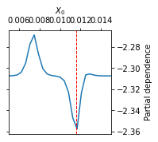
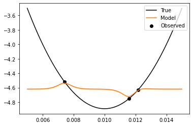
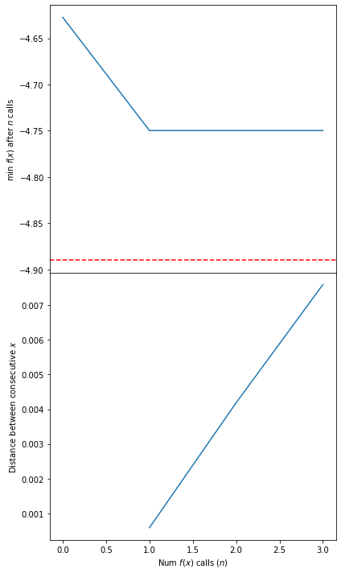
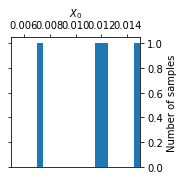
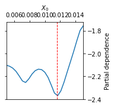
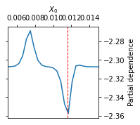
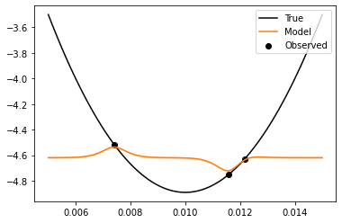
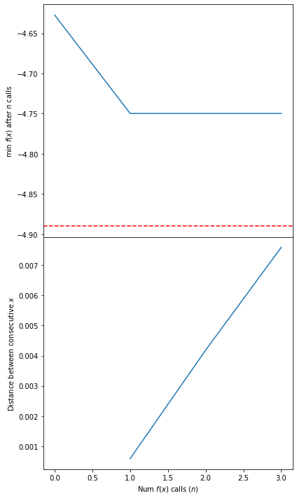
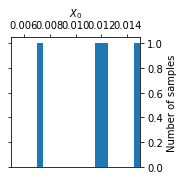
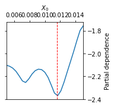
 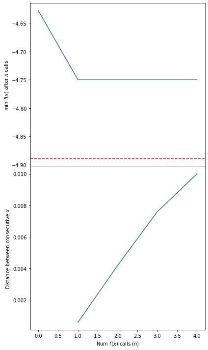
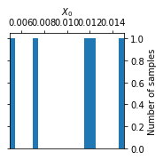
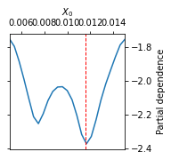
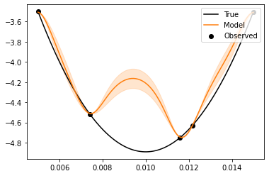
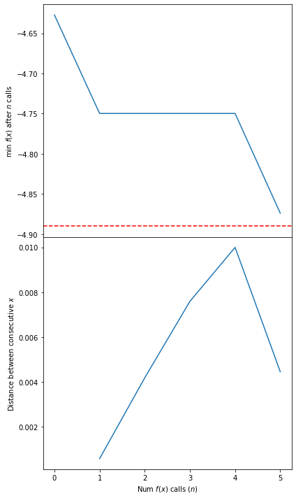
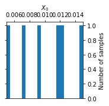
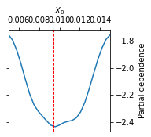
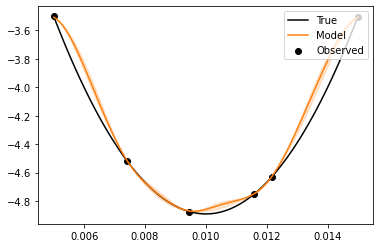
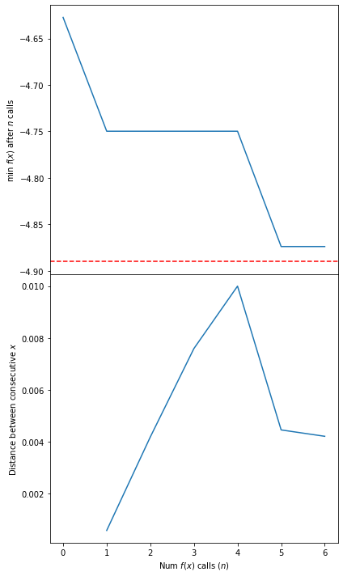
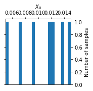
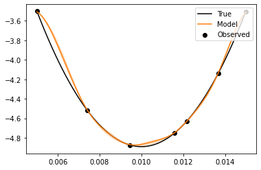
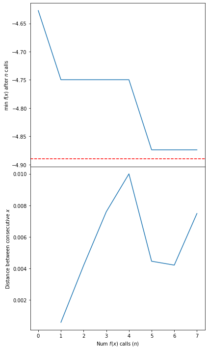
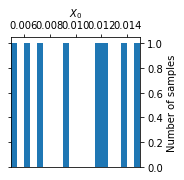
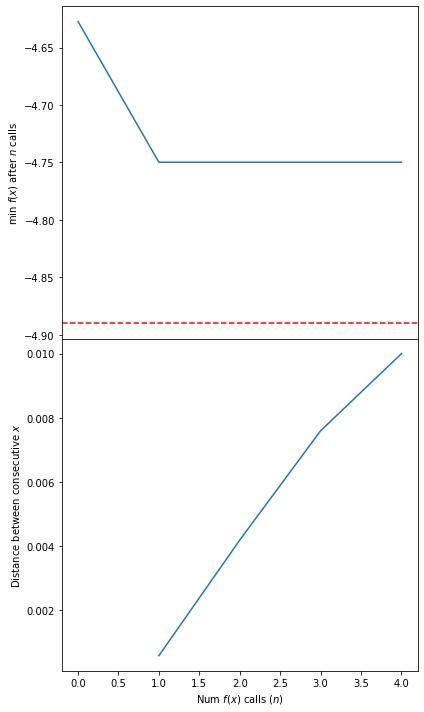
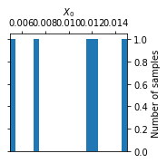
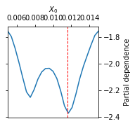
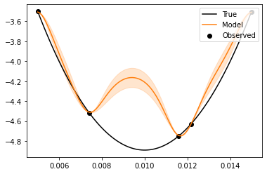
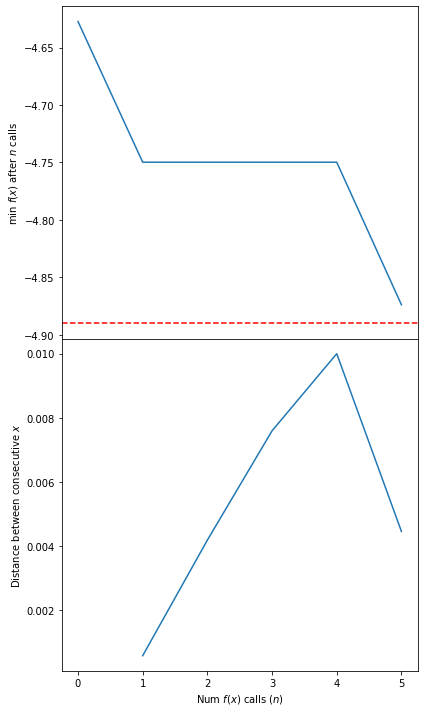
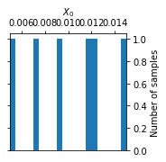
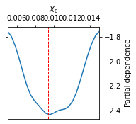
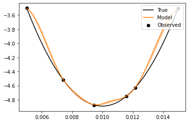
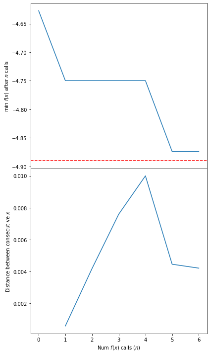
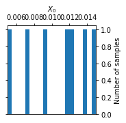
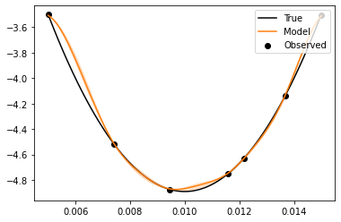
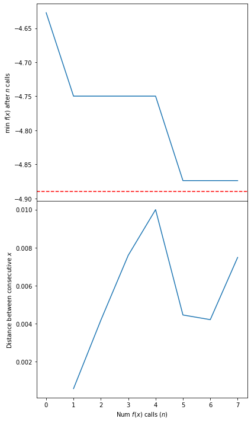
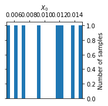
 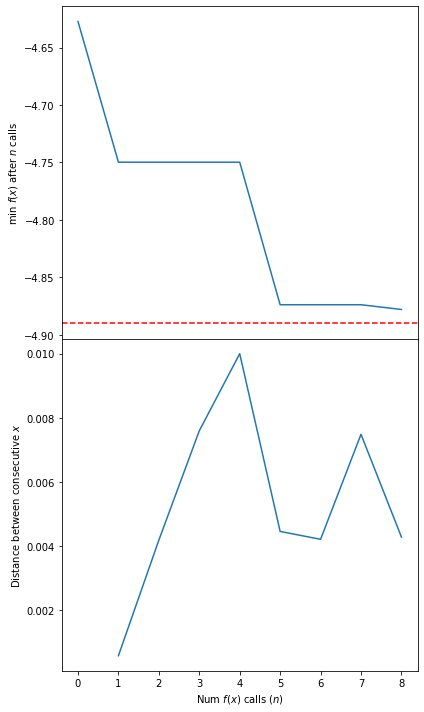
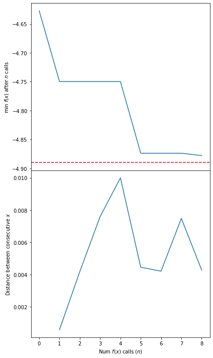
 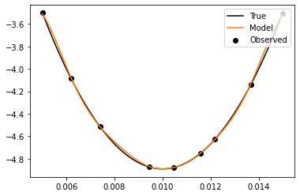
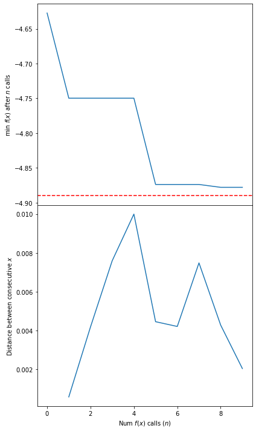
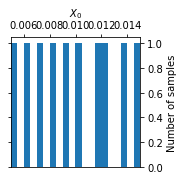
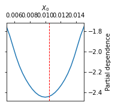
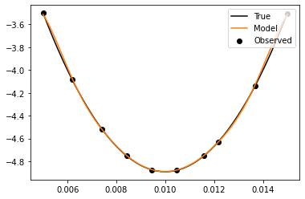
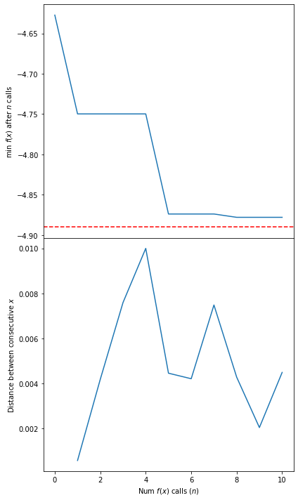
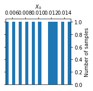
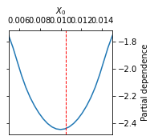
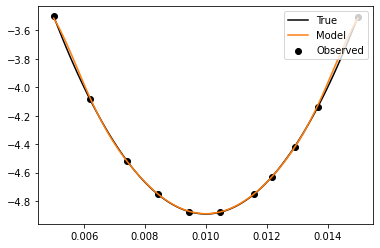
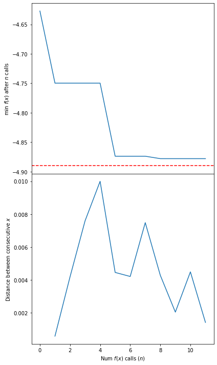
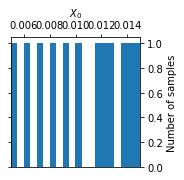
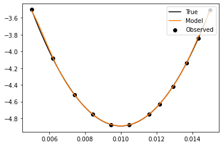
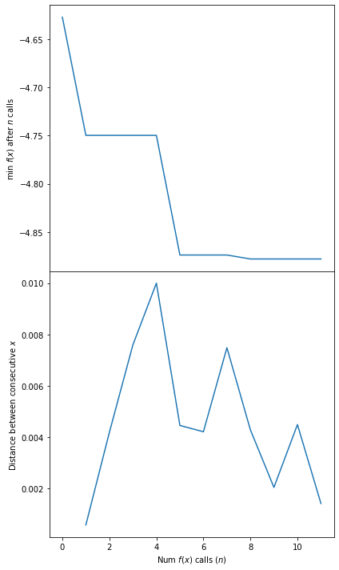
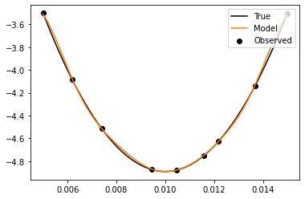
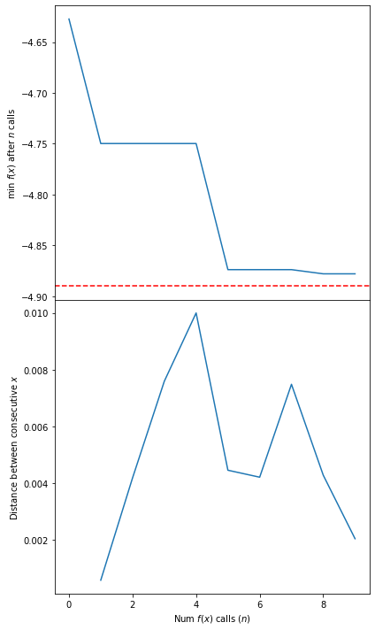
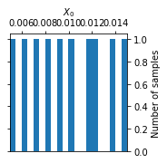
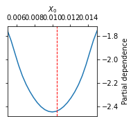
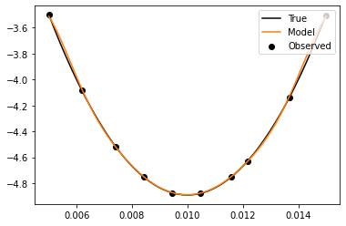
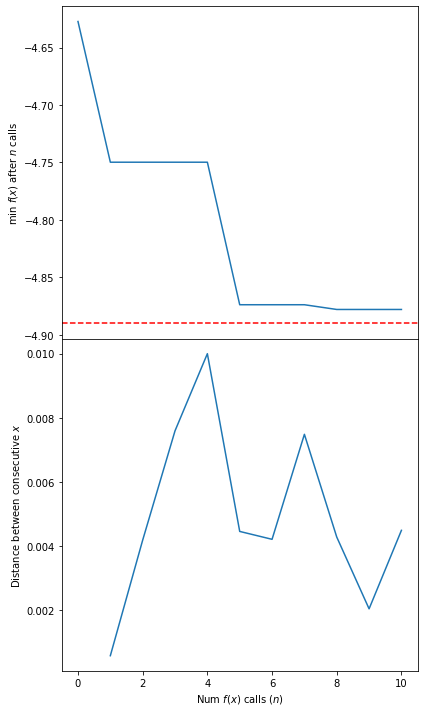
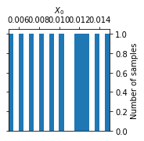
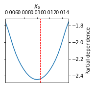
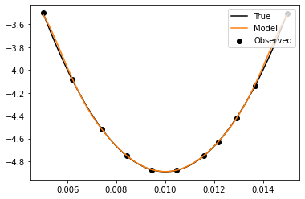
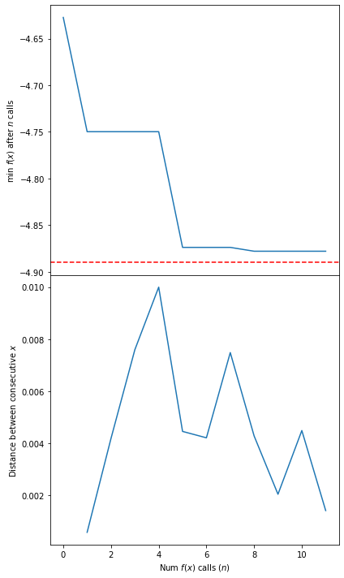
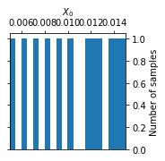
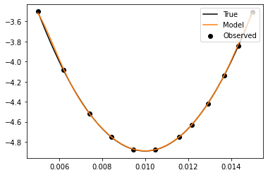
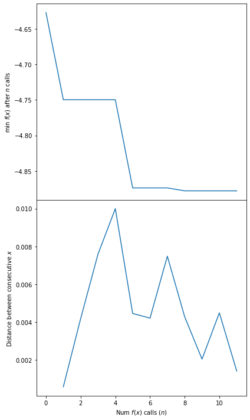